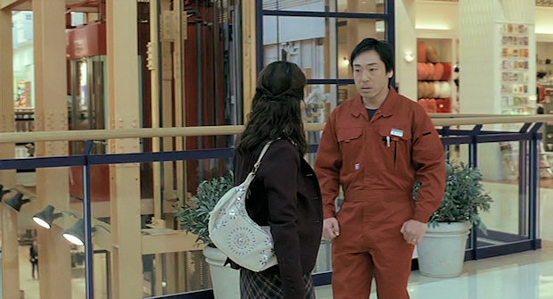

Mielőtt megnéztem volna, csak annyit tudtam erről a filmről, hogy a főszereplője Teruyuki Kagawa, aki a Tokyo! című filmben egy hikikomorit, a Sukiyaki Western Djangoban pedig a skizofrén sheriffet alakította. Mindkettőben nagyon jó volt, így gondoltam, ha ebben a filmben is legalább olyan jól játszik, mint azokban, akkor nem fogok csalódni. Előre elmondom, hogy a színészi játék és az egész film magasan felülmúlta minden várakozásomat.
https://www.youtube.com/watch?v=gI9AoCOej38
A mai Japánban járunk, egész pontosan Tokióban, ahol a japán társadalom majd’ minden rétege megtalálható, a helyszín tehát adott. Egy átlagos család mindennapjaiba csöppenünk: az apa valamiféle menedzser, középvezető, az anya háziasszony, a nagyobbik fiú kijárta már az iskolát, míg a kisebbik még tolja. Látszik, hogy egyikük élete sem könnyű, és a közöttük lévő viszony sem felhőtlen. A kisebbik gyereknek gondjai vannak az iskolában, a nagyobbik nem talál rendes állást, az anyjuk egész életét otthon tölti, míg az apjukat hirtelen kirúgják.
Ez a film nem is lehetne aktuálisabb, hiszen napjainkban itthon is sokan küzdenek, hogy megtarthassák munkahelyüket, hogy ne kerüljenek utcára, de sajnos ez nem mindig sikerül. Most pedig pontosan egy ilyen szituációban találja magát a családapa. Nem tehet mást, mint gyorsan új állás után néz, ami az ő helyzetében egyáltalán nem könnyű, és amíg nem talál megpróbálja fenntartani a látszatot, hogy még mindig sikeres menedzser. A háttérben levő pénzügyi gondok, a túl korai hazaérkezések sejtetni engedik a háttérben folyó dolgokat.

A látszatot nem lehet a végletekig fenntartani, így sorra derülnek ki a problémák, kezdve a kisebbik gyerekkel, majd a nagyobbikkal, aki elhatározza, hogy bevonul az amerikai hadseregbe, végezetül az apa munkanélküliségével. Végül eltűnik a családot összetartó erő, egy szempillantás alatt minden szétesik, vagy inkább csak szétesni látszik.
Összefoglalás képpen pedig egy idézet valakitől, aki szintén látta a filmet.
At first I thought this film would be a depressing story to watch, but I was surprised that the film was actually very uplifting. Although it’s a sad story overall, it has a very powerful message if you watch it to the end, a message that will encourage you to move on even when life gets to its darkest moment.

A gyötrődést és az emberben uralkodó belső feszültséget tökéletesen ábrázoló mű. Keserédes, igazi, emberi történet. Kiemelkedő alkotás.


Nakagin kapszula-toronyház, Tokió, 1972. Tervezte: Kurokawa K.
Vasárnap este egy citromos Gösser után összeültünk Reddel, hogy megnézzük a Tokyo! című filmet, ami tulajdonképpen három rendező három rövidfilmjéből áll. (Tudom, tudom… Citromos sör?! De ez a Gösser tényleg jó.) Olyan ez, mint Woody Allen, Francis Ford Coppola és Martin Scorsese New Yorki történetek című munkája, azzal az eltéréssel, hogy más rendezők, más vízióit láthatjuk egy másik városban, Tokióban.
A három rendező nem más, mint Michel Gondry (Egy makulátlan elme örök ragyogása), Leos Carax (Pola X) és Bong Joon-ho (The Host). Híresek, jó filmjeik vannak, és most sem hagytak cserben senkit. A Tokyo! kifrodítja a világot és az embert önmagából, odaszegez a képernyőre és ha már beszippantott, akkor nem hagyja, hogy kizökkenj a világából.
https://www.youtube.com/watch?v=dVlTWz7eY1Q
Michel Gondry – Interior Design
Egy fiatal pár, Akira és Hiroko, Tokióba érkezik, hogy munkát, lakást találjanak maguknak, és beteljesítsék álmaikat. Egy rövid időre Hiroko egyik régi barátnőjénél húzzák meg magukat, amíg nem találnak maguknak valami megfelelő helyet. Pár nap után viszont világosá válik, hogy Akira és Hiroko számára nem lesz könnyű ez az egész. Akira talál magának állást, és saját művészfilmjét is sikerül bemutatnia egy kis (pornó?)moziban. Hirokonak azonban nem jönnek össze a dolgok, nem tud elhelyezkedni, csak teng-leng a városban, egész egyszerűen saját addigi életéből is kirekesztetté válik. Furcsa átváltozáson megy keresztül, amikor fokozatosan székké változik. Mezítelen emberi és szék alakját váltogatva menekül Tokió utcáin, amikor egy zenésznek megtetszik a szék, és egyszerűen hazaviszi. Hiroko emberi alakjában soha nem találta a helyét, míg székként végre boldogan élhet. (Tudom, hogy ez egy kicsit zavaros lehet, higyjetek nekem, nagyon érdekes történet.)

Leos Carax – Merde
A francia „merde” szó magyarul szart jelent. Leos Carax rövidfilmjében a főhős, Merde a csatornákban él. Olykor-olykor előbújik a föld alól, hogy ételt: virágszirmokat és készpénzt szerezzen, valamint cigarettázzon. Egyre többször tűnik fel az utcákon és kelt félelmet a városlakókban, akik „a csatornából jött lény”-nek nevezik. Ezen kívül Merde életét a város alatt éli. Egy nap a csatornában tett sétái egyikén talál egy láda régi gránátot. Ezen a ponton kezdődnek a bajok, Merde egyik este ismét előbújik és elkezdi gránátos ámokfutását. A rendőröknek végül sikerül elfogniuk. A tárgyalásán egy francia ügyvéd képviseli őt, mert a világon csak három olyan ember él, aki érti azt a nyelvet, amit Merde beszél. Rémisztő karakterek és fordulatok jellemzik ezt a filmet. A végét nem árulom el, nem lövöm le a poént.

Bong Joon-ho – Shaking Tokyo
A főhős egy hikikomori, aki már több, mint tíz éve nem hagyta el a lakását. Teljesen elszigetelődött, semmiféle szociális képességgel nem rendelkezik már, a társadalmi érintekezés minden formáját kerüli. Megvan a saját ritmusa, mindent mániásan elrendez maga körül, az apja szobájába sose lép be és minden szombaton, amikor pizzát rendel, sosem néz a kiszállítóra. Egy szombaton viszont minden megváltozik, amikor a pizzáslánynak nyit ajtót. Épp földrengés rázza meg a várost, és a lány elájul. Hősünknek fogalma sincs, hogy mit tegyen, meg sem meri érinteni. Végül talál rajta egy gombot, megnyomja, és ezzel felébreszti, a lányt. Miután felébredt, látja, hogy a fickó milyen világban él, és ő is elhatározza, hogy ezentúl hasonlóképpen fog cselekedni. Hősünk azonban nem tudja kiverni őt a fejéből, végül elindul a megkeresni a pizzáslányt. Lakásán kívül furcsamód egy nem is olyan idegen világ várja…

Ha van rá lehetőségetek, akkor szerezzétek be. Szerintem megéri, különösen Leos Carax Merde című rövidfilmje miatt. Kétség kívül ez a leghatásosabb mindhárom közül.
Takemura Fumiya nyolcadéves joghallgató, döglusta, a szülei kis korában elhagyták, nevelőknél nőtt fel, és jelenleg épp 840 ezer yennel tartozik egy uzsorásnak. Egyik nap megjelenik nála Fukuhara Aiichiro, a behajtó, aki három nap haladékot ad Fumiya-nak.
Fukuhara később felajánl neki egymillió yent, ha Fumiya vele tart pár napig egy tokiói séta erejéig. Itt kezdődik csak el igazán a kaland: Adrift in Tokyo.
https://www.youtube.com/watch?v=TMY7ODWPdVw
Lassan kibontakozó történet, sétálós road movie, furcsa emlékek, titkok, élettapasztalatok, Tokió ezer arca, kifinomult (fekete) humor és zseniális karakterek, ezek jellemzik a filmet.


Az utóbbi évek rosszfilmáradatában ez egy igazán üde színfolt. Egyedi hangulatú vígjáték, különösen ajánlott. Majdnem megfeledkeztem a furcsa hajviseletekről. :)
A fenti kisfilmet az előző postban szereplő Tokyo Scanner című rövidfilm ihlette. Miután tegnap megnéztem, elkezdtem tokiói webkamerákat keresni, és rátaláltam egy interaktív webkamerára Shibuyában. Shibuya Tokió egy 15 négyzetkilóméteres része, ahol kétszázezren laknak, így a népsűrűség meghaladja a 13000 fő/km²-t. Az alapötlet az volt, hogy készüljön egy pár perces videó, ahol a shibuyai kereszteződés látható úgy, mintha TV-ben menne.
Röviden a megvalósításról. Laptopról kilőttem a TV-re a képet és a Compiz segítségével rázoomoltam, hogy csak a folyamatosan frissülő webkamera képe legyen látható a TV-n. Azért kellett a televízió, hogy a kis kamerával elkészített végleges felvétel olyan legyen amilyen lett. :) Pont azt szerettem volna, amit sikerült is, hogy látszódjon a képernyő csíkozódása és textúrája. Pontosan ezért ne keressen senki HD felbontást vagy tűéles képet, ez nem arról szól. Miközben forgott a film, én a másik gépről irányítottam a webkamerát, fordítottam jobbra-balra-középre. Nem tudom miért, de nagyon jó érzés volt, hogy Tokió belvárosában irányíthattam egy webkamerát innen Budapestről. Nem nagy cucc, tudom, de akkor is jó volt. A felvételt tegnap késő este csináltam, hogy Tokióban épp reggel 5 óra legyen, amikor még nincs akkora tömeg. Kicsit emberibb lett így. Éjjel feltöltöttem vimeora és tádám most itt van. Kegyetlen hangulata lett, pár perc nyugalom és szemlélődés, pont ezt akartam.

Tegnap sort kerítettem az egyik DVD-re, amit Imrétől kaptam, nevezetesen a Tokyo Scanner című filmre. Ez egy 20 perces kis rövidfilm, Tokió felett repülnek és különböző helyeket mutatnak meg. Rázoomolnak emberekre, gyorsvasútra, csónakázó szerelmespárra, felhőkarcolóban levő turistákra. A szuperzoomnál pedig tökéletesen lehet hallani az emberek hangjait, nagyon szép. A repülés alatti gyorsításokat, váltásokat úgy csinálták, mintha a kamera mozogna csak és közben a kamera motorjának a hangját lehet hallani. A hozzá készített soundtrack is kellemes. Elképesztően jó felvételeket látni a filmben, manapság sok ilyet látni CGI-ben is, pedig meg lehet ezt csinálni rendesen. A másik, ami még nagyon tetszett az a hexagon alakú kis kereső, ami zoomolásnál rálockol az emberekre, teljesen olyan, mintha valami vadászgépben ülnék. Tokió hihetetlen méreteiről árulkodik ez a film.

A DVD-n még van még pár vágatlan felvétel, amint lágy zenei aláfestéssel kísérve Tokió felett repülnek, pokoli jó. Ezt a filmet a Roppongi Hills-i épületkomplexum számára készítették, és ott is vetítik. A filmet egyébként Mamoru Oshii felügyelete mellett Hiroaki Matsu rendezte. Nagyon ajánlott, habár itthon nehézkes beszerezni.